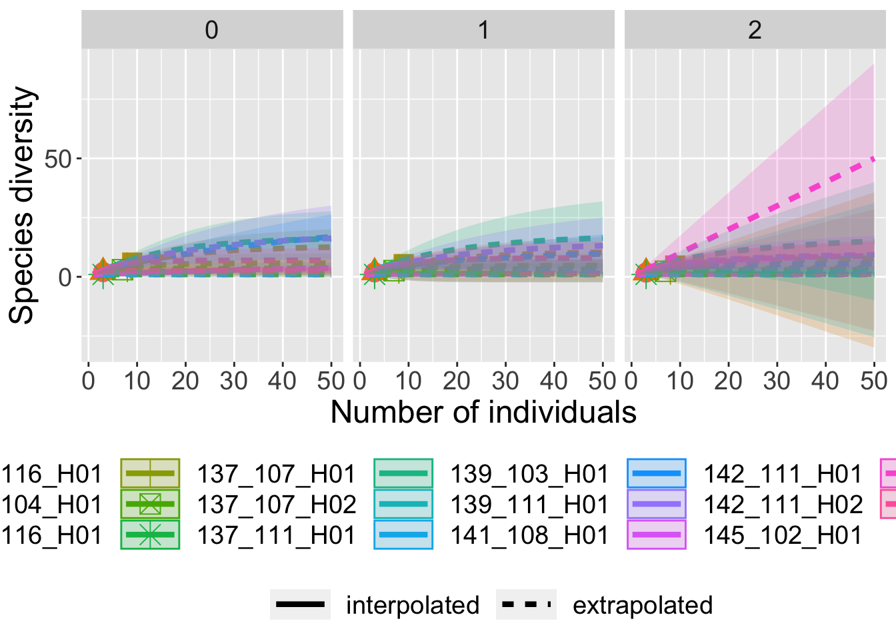
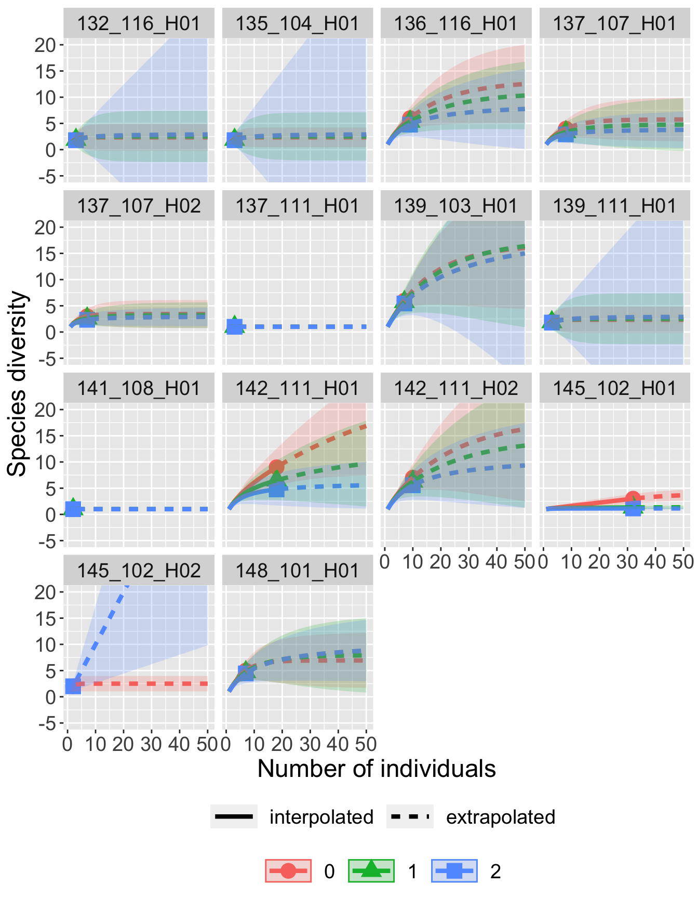

7 Histoires de la biodiversite
- Changement de phénologie dans le temps
- Quelle partie de la biodiversité on connaît (sampling/rarefaction)
- Changements de richesse au cours du temps
- Emplacement des communautés les plus originales / uniques
- Hotspots de biodiversité par taxa
- Portrait de différents biomes avec des espèces emblématiques
- Réseaux?
- Distribution de l’âge phylogénétique des espèces
- Distribution de l’année de première observation des espèces
- Potentiel de human-wildlife conflict
7.1 Sampling / rarefaction
site_spp <- papillons %>%
select(site_code, taxa, count) %>%
group_by(site_code, taxa) %>%
summarize(value = sum(count)) %>% ungroup %>%
pivot_wider(id_cols = "taxa", names_from = "site_code", values_fill = 0)## `summarise()` regrouping output by 'site_code' (override with `.groups` argument)## Warning in EstiBootComm.Ind(Spec): This site has only one species. Estimation is
## not robust.
## Warning in EstiBootComm.Ind(Spec): This site has only one species. Estimation is
## not robust.
## Warning in EstiBootComm.Ind(Spec): This site has only one species. Estimation is
## not robust.
## Warning in EstiBootComm.Ind(Spec): This site has only one species. Estimation is
## not robust.
## Warning in EstiBootComm.Ind(Spec): This site has only one species. Estimation is
## not robust.
## Warning in EstiBootComm.Ind(Spec): This site has only one species. Estimation is
## not robust.## Warning in BootstrapFun.abun(x = x, FunName, datatype, B): The Bootstrap
## community has only one species. Estimation is not robust.
## Warning in BootstrapFun.abun(x = x, FunName, datatype, B): The Bootstrap
## community has only one species. Estimation is not robust.
## Warning in BootstrapFun.abun(x = x, FunName, datatype, B): The Bootstrap
## community has only one species. Estimation is not robust.
## Warning in BootstrapFun.abun(x = x, FunName, datatype, B): The Bootstrap
## community has only one species. Estimation is not robust.## Warning: The shape palette can deal with a maximum of 6 discrete values because
## more than 6 becomes difficult to discriminate; you have 14. Consider
## specifying shapes manually if you must have them.## Warning: Removed 24 rows containing missing values (geom_point).
## Warning: Removed 1 rows containing missing values (geom_point).
How many per site?
## 132_116_H01 135_104_H01 136_116_H01 137_107_H01 137_107_H02 137_111_H01
## 3 3 9 8 7 3
## 139_103_H01 139_111_H01 141_108_H01 142_111_H01 142_111_H02 145_102_H01
## 7 3 2 18 10 32
## 145_102_H02 148_101_H01
## 2 7